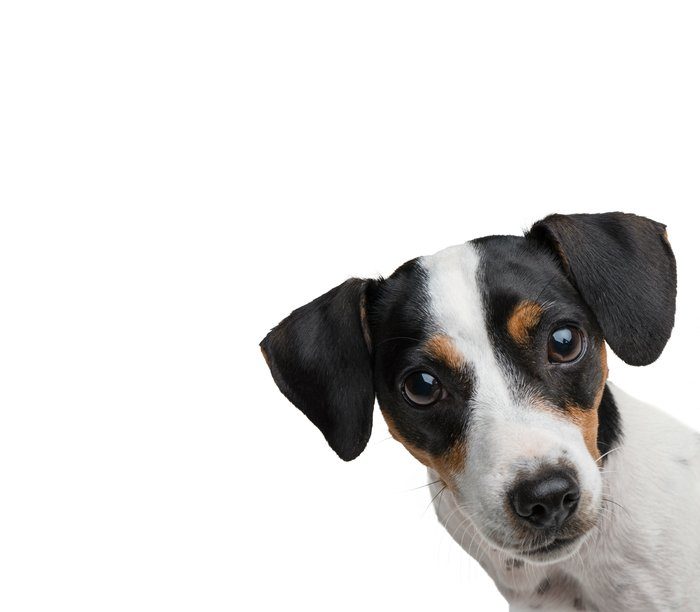
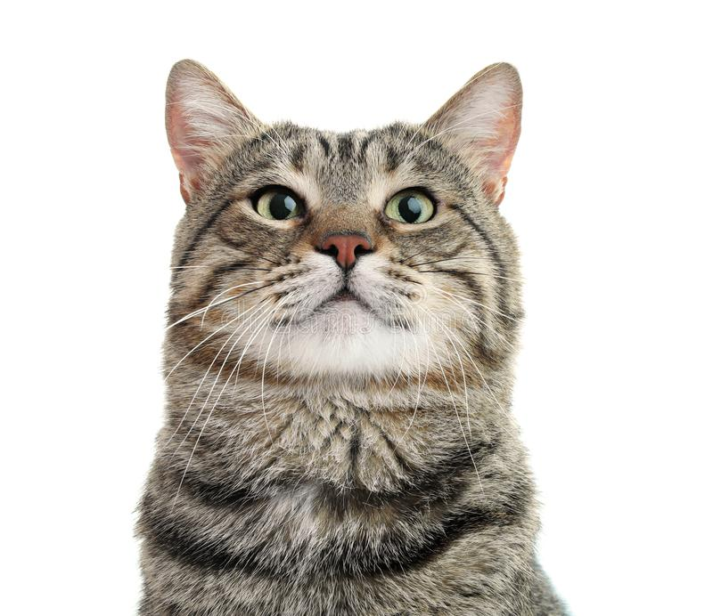

O número de abandonos infelizmente é muito maior que os de adoções.
Existem muitas vantagens em adotar um animal.
Afinal, a adoção tem o poder de transformar homem e animal em um só coração ❤.

AdoteAqui! é uma instituição sem fins lucrativos, que tem o objetivo de facilitar a adoção de animais em condição de rua.
Os animais que fazem parte do nosso banco de dados estão em lar temporário.

Antes de adotar um coraçãozinho você precisa decidir:
Se você já se planejou para todos os itens descritos, você está pronto para adotar um cãozinho ou gatinho de rua!!
Não esqueça antes de qualquer decisão, que animais são uma vida que está em suas mãos. Sentem fome, sede, frio, dor, alegria e tristeza. Coloque-se sempre no lugar de seu animal!